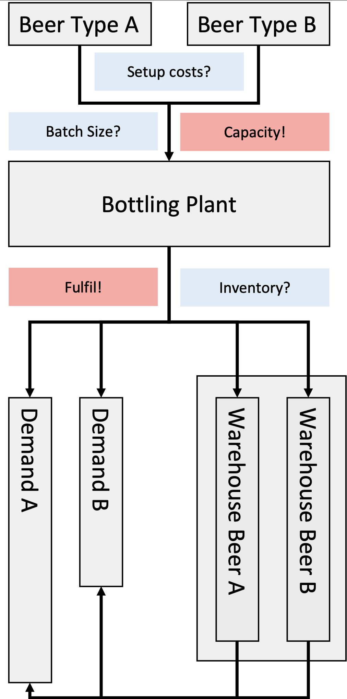
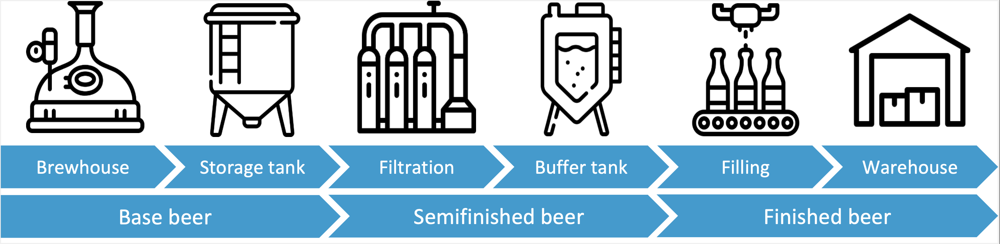

Lecture V - Production Planning in Breweries
Applied Optimization with Julia
Introduction
Case Study

- Large brewery
- Brews and sells beverages
- Production planning by hand
- Planner has a lot of experience
- But will retire soon
Challenges

- Strong competition
- Customer demand is changing
- Craft beer gains popularity
- Variety of drinks is increasing
- Batch sizes are getting smaller
Different costs

- Plant can fill multiple types
- Time depends on type and batch
- Changing type leads to set-up costs for preparation and cleaning
- Unsold beer bottles can be stored in a warehouse
- This leads to inventory costs
Problem Structure

Objective
Question: What could be the objective?
. . .
Minimize the combined setup and inventory holding cost while satisfying the demand and adhering to the production capacity.
Question: What is the trade-off?
. . .
Larger batches require less setup cost per bottle, but increase the storage cost.
Available Data
Sets
- \(\mathcal{I}\) - Set of beer types indexed by \(i \in \{1,2,...,|\mathcal{I}|\}\)
- \(\mathcal{T}\) - Set of time periods of the planning horizon indexed by \(t \in \{1,2,...,|\mathcal{T}|\}\)
Parameters
- \(a_t\) - Available time on the bottling plant in period \(t\in\mathcal{T}\)
- \(b_i\) - Time used for bottling one unit of beer type \(i\in\mathcal{I}\)
- \(g_i\) - Setup time for beer type \(i\in\mathcal{I}\)
- \(f_i\) - Setup cost of beer type \(i\in\mathcal{I}\)
- \(c_i\) - Inventory holding cost for one unit of beer type \(i\in\mathcal{I}\)
- \(d_{i,t}\) - Demand of beer type \(i\in\mathcal{I}\) in period \(t\in\mathcal{T}\)
Decision Variables
- Beer types indexed by \(i \in \{1,2,...,|\mathcal{I}|\}\)
- Time periods of the planning horizon indexed by \(t \in \{1,2,...,|\mathcal{T}|\}\)
Minimize the combined setup and inventory holding cost while satisfying the demand and adhering to the production capacity.
Question: What could be our decision variable/s?
. . .
- \(W_{i,t}\) - Inventory of beer type \(i\in\mathcal{I}\) at the end of period \(t\in\mathcal{T}\)
- \(Y_{i,t}\) - 1, if beer type \(i\in\mathcal{I}\) is bottled in period \(t\in\mathcal{T}\), 0 otherwise
- \(X_{i,t}\) - Batch size of beer type \(i\in\mathcal{I}\) in \(t\in\mathcal{T}\)
Model Formulation
Objective Function
Minimize the combined setup and inventory holding cost while satisfying the demand and adhering to the production capacity.
Question: What could be our objective function?
Variables used: - \(W_{i,t}\) - Inventory of beer type \(i\in\mathcal{I}\) at the end of period \(t\in\mathcal{T}\) - \(Y_{i,t}\) - 1, if beer type \(i\in\mathcal{I}\) is bottled in period \(t\in\mathcal{T}\), 0 otherwise
. . .
\[\text{Minimize} \quad \sum_{i=1}^{\mathcal{I}} \sum_{t=1}^{\mathcal{T}} (c_i \times W_{i,t} + f_i \times Y_{i,t})\]
Constraints
Question: What kind of constraints do we need?
. . .
- Transfer the unused inventory of the last period
- Fulfill the customer demand in each period
- Calculate the batch size per set-up beer
- Compute the remaining inventory per period
- Set up beer types where the batch size is \(\geq 0\)
- Limit the capacity of the bottling plant
Demand and Inventory Constraints
While considering the current inventory and batch sizes and compute the remaining inventory:
Variables used: - \(W_{i,t}\) - Inventory of beer type \(i\in\mathcal{I}\) at the end of period \(t\in\mathcal{T}\) - \(X_{i,t}\) - Batch size of beer type \(i\in\mathcal{I}\) in \(t\in\mathcal{T}\) - \(d_{i,t}\) - Demand of beer type \(i\in\mathcal{I}\) in period \(t\in\mathcal{T}\)
. . .
\[W_{i,t-1} + X_{i,t} - W_{i,t} = d_{i,t} \quad \forall i\in\mathcal{I},t\in\mathcal{T}|t>1\]
Setup Constraints
To explicitly enforce the addition of setup costs in the objective function:
Variables used: - \(Y_{i,t}\) - 1, if beer type \(i\in\mathcal{I}\) is bottled in period \(t\in\mathcal{T}\), 0 otherwise - \(X_{i,t}\) - Batch size of beer type \(i\in\mathcal{I}\) in \(t\in\mathcal{T}\) - \(d_{i,t}\) - Demand of beer type \(i\in\mathcal{I}\) in period \(t\in\mathcal{T}\)
. . .
\[X_{i,t} \leq Y_{i,t} \times \sum_{\tau=1}^{\mathcal{T}} d_{i\tau} \quad \forall i\in\mathcal{I},\forall t\in\mathcal{T}\]
This type of constraint is also called a “Big-M” constraint!
Capacity Constraints
Variables used: - \(Y_{i,t}\) - 1, if beer type \(i\in\mathcal{I}\) is bottled in period \(t\in\mathcal{T}\), 0 otherwise - \(X_{i,t}\) - Batch size of beer type \(i\in\mathcal{I}\) in \(t\in\mathcal{T}\) - \(a_t\) - Available time on the bottling plant in period \(t\in\mathcal{T}\) - \(b_i\) - Time used for bottling one unit of beer type \(i\in\mathcal{I}\) - \(g_i\) - Setup time for beer type \(i\in\mathcal{I}\)
. . .
\[\sum_{i=1}^{\mathcal{I}} (b_i \times X_{i,t} + g_i \times Y_{i,t}) \leq a_t \quad \forall t\in\mathcal{T}\]
Capacitated Lot-Sizing Problem
\[\text{Minimize} \quad \sum_{i \in \mathcal{I}} \sum_{t \in \mathcal{T}} (c_i \times W_{i,t} + f_i \times Y_{i,t})\]
subject to:
\[W_{i,t-1} + X_{i,t} - W_{i,t} = d_{i,t} \quad \forall i\in\mathcal{I},t\in\mathcal{T}|t>1\]
\[X_{i,t} \leq Y_{i,t} \times \sum_{\tau \in \mathcal{T}} d_{i,\tau} \quad \forall i\in\mathcal{I},\forall t\in\mathcal{T}\]
\[\sum_{i \in \mathcal{I}} (b_i \times X_{i,t} + g_i \times Y_{i,t}) \leq a_t \quad \forall t\in\mathcal{T}\]
\[Y_{i,t}\in\{0,1\} \quad \forall i\in\mathcal{I},t\in\mathcal{T}\]
\[W_{i,t}, X_{i,t}\geq 0 \quad \forall i\in\mathcal{I},t\in\mathcal{T}\]
Model Characteristics
Some Basics: Algebraic Modeling
- Linear (LP)
- Mixed-integer (MIP)
- Non-linear (NLP)
- Mixed-integer non-linear (MINLP)
Some Basics: Solution Algorithms
- Simplex algorithm to solve linear Problems (LP)
- Graph theoretical methods (network flow, shortest path)
- Branch & Bound to solve mixed-integer problems (MIP)
- Outer-Approximation for (convex) mixed-integer non-linear problems (MINLP)
- Math-Heuristics (e.g., Fix-and-Optimize, Tabu-Search, …)
- Decomposition methods (Lagrange relaxation, Benders, column generation, …)
- Heuristics (greedy, construction method, n-opt)
- Simulation-based optimization (stochastic problems)
Capacitated Lot-Sizing Problem
- Is the model formulation linear/ non-linear?
- What kind of variable domains do we have?
- What kind of solver could we use to derive solutions to the problem?
- Can the Big-M constraint be tightened?
- What assumptions have we made?
- What is the problem with the planning horizon, and how can it be solved?
Impact
Real World Application
Question: Can this be applied in the real world?
Brewing Process Review

Case Study Scale
- 220 finished products
- 100 semi-finished products
- 13 production resources
- 8 storage resources
- 3 main production levels
- 52 weeks planning horizon
Case Study Solution
- Multi-level Capacitated Lot-Sizing Problem
- Difficult to solve and requires heuristics
- Cloud-based tool for planners
- Reduction of operating costs by 5%
- Reduction of planning effort by 40%
Tutorial
3.a Modelling the CLSP
First, implement the CLSP from the lecture in Julia.
The weekly demand in bottles \(d_{i,t}\), the available time at the bottling plant in hours \(a_t\), the time required to bottle each beer in hours \(b_i\), and the setup time in hours \(g_i\) are provided as CSV files.
Consider in your implementation, that each hour of setup is associated with a cost of 1000 Euros, and the inventory holding cost for unsold bottles at the end of each period is 0.1 Euro per bottle.
Please provide us with a functional model in a .jl file that incorporates the aforementioned parameters and constraints. Note, that you can also provide the revised model from task b to answer this task.
3.b Initial Warehouse Stock
The model currently sets the initial warehouse stock levels without any restrictions.
Modify your model to incorporate an initial stock for all types of beer of zero at the beginning of the initial planning period.
Please provide a revised working model as .jl file.
3.c Scheduled repair
Unfortunately, the bottling plant has to undergo maintenance in periods “week_10” and “week_11”.
Extend your model to prevent any production in those two periods. To hand-in this task, you can simply extend the previous model by these additional constraints.
3.d Interpretation of the solution
Analyze the production schedule outlined in section 3.b. Is the workload distributed evenly across all time periods? Provide a rationale for your assessment and a plot of the aggregated production quantities over all beer sorts.
Based on the production data from the final period in 3.b, calculate the ending inventory levels for each type of beer. Discuss any significant findings.
Reflecting on a scenario where the company schedules its bottling operations biannually using the current method: identify and discuss potential pitfalls of this strategy. Offer at least one actionable suggestion for enhancing the efficiency or effectiveness of the production planning process. (Note: There’s no need to code something in Julia for this part.)